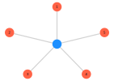
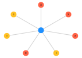

Plotting functions
Functions for plotting tensor-network codes and operators.
TensorNetworkCodes.plot_code — Functionplot_code(code::TensorNetworkCode; use_coords=true)Return a plot, as returned by GraphPlot.gplot, of the code. If used in a Jupyter notebook the plot is rendered after the cell.
Physical qubit nodes are coloured red and virtual tensors are coloured green or blue: green if they have no logical qubits and blue if they do.
Examples
julia> code = TensorNetworkCode(five_qubit_code());
julia> plot_code(code)
TensorNetworkCodes.plot_operator — Functionplot_operator(code::TensorNetworkCode, operator::AbstractVector{Int}; use_coords=true)Return a plot, as returned by GraphPlot.gplot, of the operator. If used in a Jupyter notebook the plot is rendered after the cell.
Examples
julia> code = TensorNetworkCode(steane_code());
julia> plot_operator(code, code.stabilizers[1])